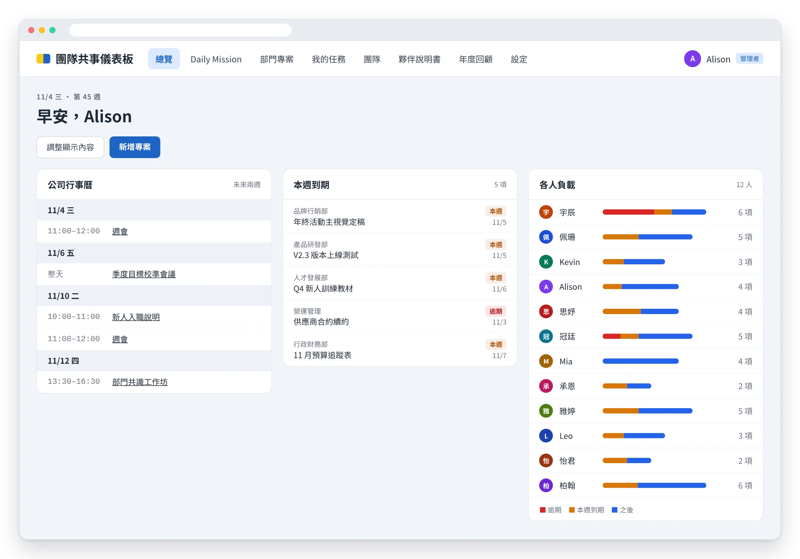

角色的安全感
團隊總在互相抱怨？問題可能不在溝通，而在流程
吳佳玲 Alison｜2026.10.30
一位創辦人的「輪轉式抱怨」
有一位微型企業的創辦人來找我，我們都叫他周大哥。他說自己最近非常困擾。
團隊的工作常常漏球：行銷部弄完的東西，客服部沒有收到通知，客戶的需求就沒有被好好回應。成員之間也開始溝通不良，大家工作得不太開心。
最讓他耗能的，是每天都在聽抱怨。A 來抱怨 B，B 又來抱怨 A，輪著來。他的心力，全花在這些事情上。
以為是溝通問題，其實是「交棒」問題
周大哥一開始的判斷是：問題應該出在溝通上。只要大家把話說清楚，工作上的相處就會改善。
這個判斷沒有錯。但當我進一步訪談員工、了解狀況之後，我發現了另一件事：
很多時候，兩個人接不好對方的工作，只是因為他們不知道這個流程結束之後，到底該由誰來承接。
於是就出現了周大哥說的那些狀況：工作掉球、事情沒人做，然後大家開始互相推：「那明明就是行銷的事」、「那明明就是客服的事」、「那明明就是營運的事」。
所以我跟周大哥說：「團隊溝通的課程，我們後面可以再上。但我建議先來做工作流程盤點。」把流程盤清楚，就能知道部門之間、人與人之間，工作到底該怎麼銜接。
花一個多月，把每個人的工作盤出來
我們花了一個多月，分三步完成工作流程盤點：
先開會說明
讓全體員工知道接下來要做什麼、為什麼要做，先把大家的疑慮放下來。
一對一訪談
每個人跟我約時間，我先說明流程盤點的概念，再陪他一起把自己的工作拆解出來。
整合成全貌
把每個人的盤點串在一起，看見整個團隊的工作從哪裡開始、在哪裡交棒、在哪裡卡住。
盤點完，員工和周大哥各自看見了什麼
員工看見了自己的位置。 很多同仁跟我說：「哇，從來沒想過可以把工作流程盤出來。」他們更清楚自己每天要做哪些事，也知道完成這個步驟之後，要交給下一個人。交棒清楚了，團隊之間的溝通也跟著改善。
周大哥看見了自己的盲點。 周大哥能力很強，也很往前衝，很多想法在腦中轉得飛快。他以為交辦出去的事，團隊就會很快做完。
但團隊不一定跟得上他的腳步。當組織越來越大，他需要的是更明確的分工，以及陪伴團隊知道：現在走到哪一個關卡、在哪裡卡住了。
有了盤點出來的流程，周大哥開始這樣支援團隊：
- 交辦時，說清楚「完成的樣子」：不只給方向，也說明要交出什麼、什麼時候交、交給誰。
- 在交棒點主動關心：對照流程，在最容易掉球的銜接處問一句：「下一棒接到了嗎？」
- 定期一對一，問「卡在哪裡」：不是追進度，而是問：「你現在卡在哪一關？需要我幫什麼？」
- 卡關時先幫忙排優先：當團隊同時被很多事情拉著跑，幫他們決定先做什麼、先放下什麼，而不是再加新任務。
下一步：一個讓大家看見彼此的儀表板
溝通改善之後，周大哥又提出了另一個煩惱：團隊小的時候，他還掌握得了；人越來越多，他不知道每個人今天最重要的三件事是什麼，也不確定大家忙的，是不是他覺得該優先的事。
因為已經盤點過工作流程，我們接著建立了一個動態的團隊共事儀表板：

- 周大哥每天從總覽就能看到：每位成員今天要做的事，以及公司最重要的專案進度。
- 每位同仁都知道：今天的任務是什麼、有沒有快要過期的事、哪些東西可以持續推進。
- 夥伴說明書：每個人寫下怎麼跟自己溝通最舒服，還放上星座、MBTI、瑪雅曆的代碼，讓大家更了解彼此。
儀表板建好後，周大哥突然跟我說：「好像溝通課程也不一定要上了。」
因為大家有了一個共同的平台，看得見彼此在努力的事，也知道可以怎麼互相協調與合作。
在 AI 時代，讓每個人的價值被看見
這個案例讓我更確定一件事：團隊之間的摩擦，不一定來自人不會說話，很多時候是因為「事」沒有被理清楚。不知道自己該做什麼、不知道要交給誰，人就容易不安、防衛，然後開始互相抱怨。
而在 AI 時代，大家越來越擔心：自己的價值，會不會沒有被看到？
一個先盤清工作流程、再建立起來的團隊儀表板，正好能幫忙解決這件事。它讓每個人看見自己的位置與貢獻，也讓主管能好好管理團隊的任務與進度。
先把事理清楚，安全感才有基礎。
← 回到首頁